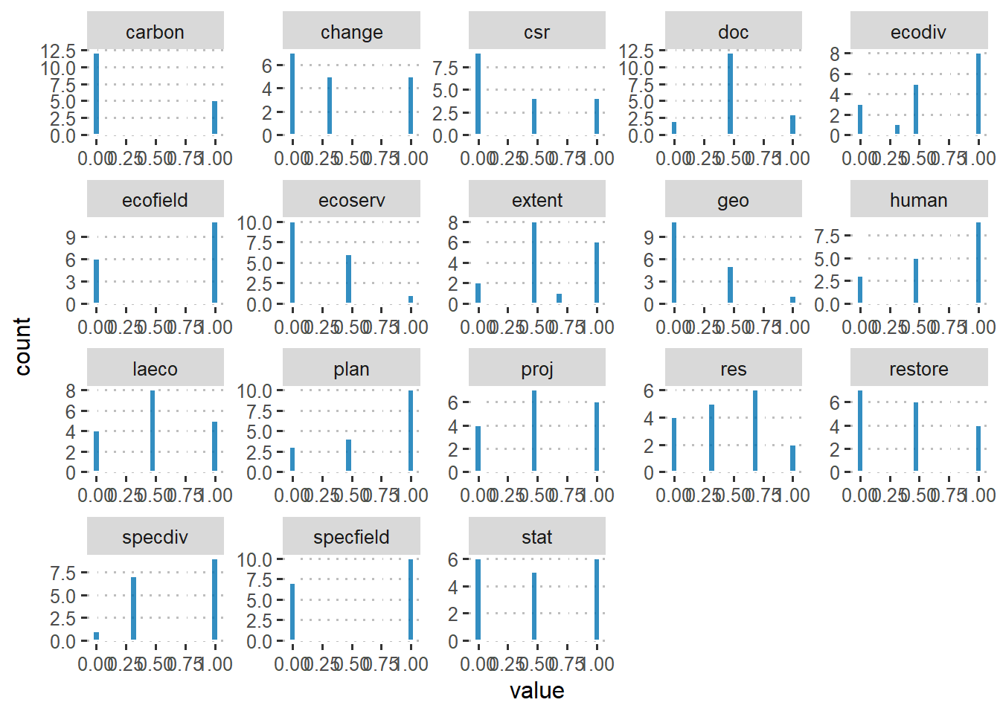
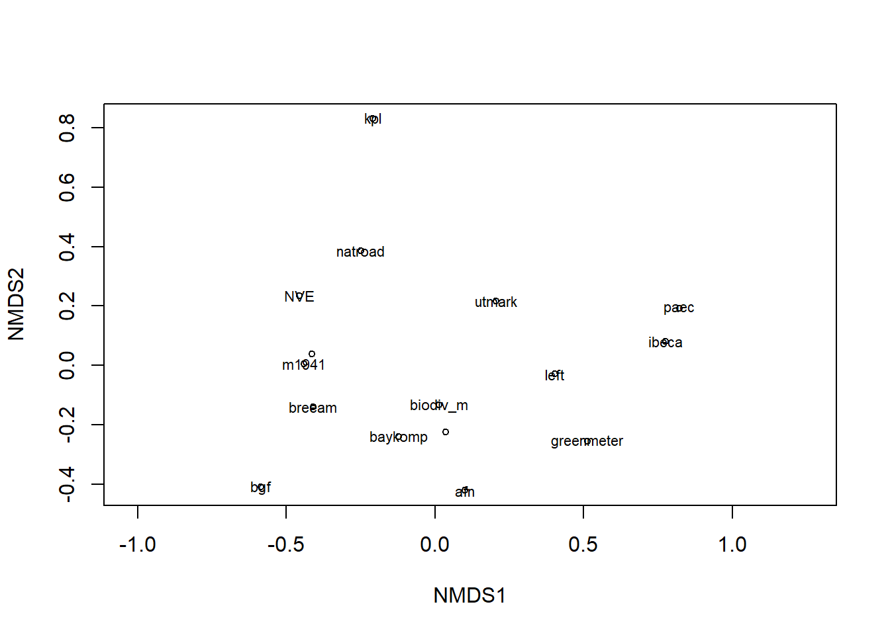

Here we analyse a data set (data/loc_eco_accounts.csv) with information about the scope of different methodologies used to document natural capital and values. We are interested in the commonalities and differences in these methods and how that relates to the spatial scales that they are applied at. In Norway, new development projects of a certain size is recuired to undertake an environmental risk assessment (konsekvensutredning - KU). We are especially interested in alternative approaches to this system and which more holistic/comprehensive and which can be presented in an ecosystem accounting framework.
Analysis
Load packages etc
library(tidyverse)library(vegan)library(gridExtra)library(corrplot)library(tidymodels)library(tidytext)library(ggpubr)library(factoextra)#derive results from prcomp, pcalibrary(ggrepel)library(data.table)# In case you have a local issue, you might need this line# Sys.setlocale("LC_CTYPE", "norwegian")# Stop scientific notationoptions(scipen=999)
Load data
dat <-read_csv("../data/loc_eco_account.csv")dat |> DT::datatable()
Histograms
Show the code
# This figure needs a bit of work still# dat[, 1:12] %>%# keep(is.numeric) %>%# gather() %>%# ggplot(aes(value)) +# facet_wrap(~key, scales = "free") +# geom_histogram(bins = 20, color = "white", fill = "#0072B2", alpha = 0.8) +# theme_pubclean()## dat[, 1:18] %>%# keep(is.numeric) %>%# gather() %>%# ggplot(aes(value)) +# facet_wrap(~key, scales = "free") +# geom_histogram(bins = 20, color = "white", fill = "#0072B2", alpha = 0.8) +# theme_pubclean()#p <- dat[, 1:20] %>%keep(is.numeric) %>%gather() %>%ggplot(aes(value)) +facet_wrap(~key, scales ="free") +geom_histogram(bins =20, color ="white", fill ="#0072B2", alpha =0.8) +theme_pubclean()p#ggsave("../plots/histograms.png", p, scale = 2, bg = "white", width = 12, height = 12, units = "cm", dpi = 600)

Figure 1: Histogram showing the distribution of scored values for ordinal variables
Multivariate
First we set up the workflow.
Code for alternative recipe
transformation_recipe <-recipe(~., data = dat) %>%update_role(method, approach, new_role ="id") %>%# step_impute_mean(all_numeric()) |># 1 impute or omit nastep_naomit(all_numeric()) %>%# mean impute numeric variables# step_impute_mean(all_numeric()) |># 2 Handle factor levels# convert specific variable(s) to dummy variables# step_dummy(kyst_f) %>%# 3 Individual transformations for skewness and other issuesstep_YeoJohnson(all_numeric()) |># 4 Create interactions# 5 Normalization steps (center, scale, range, etc)# step_center(all_numeric()) |># step_scale(all_numeric()) |>step_normalize(all_numeric()) %>%# rescale all numeric variables except ..., ... and ... to lie between 0 and 1# step_range(all_numeric(), min = 0, max = 1, -vanilla, -salt, -baking_powder) %>%step_range(all_numeric(), min =0, max =1) %>%# remove predictor variables that are almost the same for every entrystep_nzv(all_predictors()) |># step_pca(all_numeric(), id = "pca") %>%prep() # CRN: package for function "prep" missing?
transformation_recipe2 <-recipe(~., data = dat) |>update_role(method, approach, new_role ="id") %>%step_naomit(all_numeric()) |>step_YeoJohnson(all_numeric()) |>#step_normalize(all_numeric()) |> step_range(all_numeric(), min =0, max =1) %>%step_nzv(all_predictors()) |>prep()
Fit recipe to data and preprocess
preprocessed_data <-bake(transformation_recipe2, new_data =NULL) |>as_tibble() |> tibble::column_to_rownames("approach")# save method seperately as a dataframemethod.env <- preprocessed_data |>select(method)# save clean matrixmatrix <- preprocessed_data |> dplyr::select(-method,-doc )
The correlation matrix can be calculated as follows (returning only correlation coefficients):
Call:
metaMDS(comm = matrix, distance = "bray", k = 2, trymax = 500, wascores = TRUE, maxit = 999)
global Multidimensional Scaling using monoMDS
Data: matrix
Distance: bray
Dimensions: 2
Stress: 0.1313797
Stress type 1, weak ties
Best solution was repeated 7 times in 20 tries
The best solution was from try 4 (random start)
Scaling: centring, PC rotation, halfchange scaling
Species: expanded scores based on 'matrix'
As a rule of thumb literature has identified the following cut-off values for stress-level:
Higher than 0.2 is poor (risks for false interpretation).
0.1 - 0.2 is fair (some distances can be misleading for interpretation).
0.05 - 0.1 is good (can be confident in inferences from plot).
Less than 0.05 is excellent (this can be rare).
Here is a list of test statistics for goodness of fit for each point
method.envfit <-envfit(method.mds, method.env, permutations =999) # this fits environmental vectorsmethod.spp.fit <-envfit(method.mds, matrix, permutations =999) # this fits species vectors#method.mds#method.spp.fit# Plotting points in ordination spaceplot(method.mds, "sites") # Produces distance orditorp(method.mds, "sites") # Gives points labels

Figure 6: NMDS ordination of different methods for assessing ecosystem extent and condition
Saving NMDS results into dataframe
Show the code
site.scrs <-as.data.frame(scores(method.mds, display ="sites")) #add grouping variable "Management" to dataframesite.scrs <-cbind(site.scrs, Method = method.env) #add grouping variable of cluster grouping to dataframesite.scrs <-cbind(site.scrs, Approach = method.env) # add site names as variable if you want to display on plot# site.scrs <- cbind(site.scrs, Site = rownames(site.scrs)) DT::datatable(site.scrs)
Save axes scores
Show the code
##***Akse 1**####Analysevariabler# cor.test(site.scrs$NMDS1, matrix$csr, method="k") # csr was remove above# cor.test(site.scrs$NMDS1, matrix$proj, method="k") # same herecor.test(site.scrs$NMDS1, matrix$plan, method="k")
Warning in cor.test.default(site.scrs$NMDS1, matrix$plan, method = "k"): Cannot
compute exact p-value with ties
Kendall's rank correlation tau
data: site.scrs$NMDS1 and matrix$plan
z = -3.2947, p-value = 0.0009852
alternative hypothesis: true tau is not equal to 0
sample estimates:
tau
-0.6653103
Show the code
#Bestem akse - husk å skifte fra "akse1" til f.eks."akse2" hver gang en går over fra f.eks. gnmds1 til gnmds2ax1<-site.scrs$NMDS1 #Bestem akse - husk ? skifte fra "akse1" til f.eks."akse2" hver gang en g?r over fra f.eks. gnmds1 til gnmds2ax2<-site.scrs$NMDS2 #ax3<-site.scrs$NMDS3 #Bestem akse - husk ? skifte fra "akse1" til f.eks."akse2" hver gang en g?r over fra f.eks. gnmds1 til gnmds2la.var<-matrix #Bestem miljøvariabelmatrise
Table 1: NMDS axis 1 correltions
Show the code
# Axis 1p.val <-NULL# create empty objects for the p.valuestau.val <-NULL# creates empty object for the t-values.p <-NULL# A Loop that calculates Kendall's tau and p-values for all the correlations tests.NB! Husk ? endre antall faktorer som analyseres!for (i in1:length(ax1)) { z <-cor.test(ax1, la.var[, i], method ="k") p.val[i] <-round(z$p.value, digits =3) tau.val[i] <-round(z$estimate, digits =2)if (p.val[i] <0.05) # prints a star when the p-value is less than 0.05 { p[i] <-"***" } else { p[i] <-" " }}# names(la.var)# p.val# tau.valsummary.ax1 <-data.frame(cbind(names(la.var), tau.val, p.val))DT::datatable(summary.ax1)